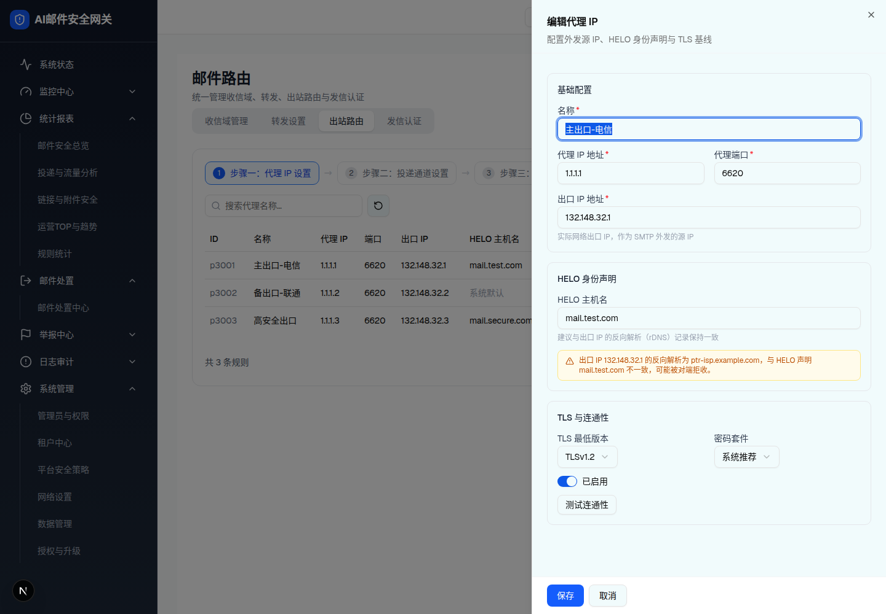
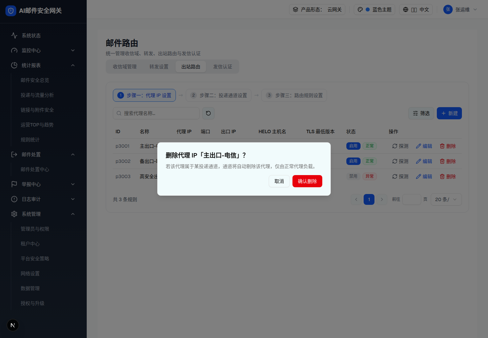

| 所属组件 | 2.5 出站路由 Tab · 步骤一 |
| 触发路径 | 步骤一列表「新建 / 编辑」→ Sheet 抽屉；「删除」→ AlertDialog（本页 #delete） |
| 抽屉标题 | 「新建代理 IP」/「编辑代理 IP」+ 副标题「配置外发源 IP、HELO 身份声明与 TLS 基线」 |
预览可操作：名称/代理 IP/端口/出口 IP/HELO 全部实时校验（IPv4 正则、名称 2-50 字符唯一、HELO 必须为域名非 IP）；HELO 主机名非空且 ≠ ptr-isp.example.com 时出现橙色 rDNS 不一致警告（mock PTR 固定值，试着清空或改成 ptr-isp.example.com 观察警告消失）；TLS 最低版本与密码套件 Select 可展开；启停 Switch；「测试连通性」需代理 IP 非空，0.9s 随机结果。

| 字段 | 规格（浏览器实测） |
|---|---|
| 名称 * | 必填「请输入名称」/ 长度「名称需 2-50 字符」/ 唯一「名称已存在」 |
| 代理 IP 地址 * / 代理端口 * | 占位「如 1.1.1.1」，isIPv4「需为合法 IPv4 地址」；端口默认 6620，1-65535 |
| 出口 IP 地址 * | hint「实际网络出口 IP，作为 SMTP 外发的源 IP」，占位「如 132.148.32.1」，IPv4 校验 |
| HELO 主机名 | 选填，占位「请输入向对端服务器声明的 HELO/EHLO 主机名，留空使用系统默认」，hint「建议与出口 IP 的反向解析（rDNS）记录保持一致」；校验「HELO 主机名需为合法域名格式，不能为 IP 地址」；rDNS 不一致 → 橙色警告（不阻断保存）；保存时 HELO=系统默认值（mail.gateway.local）→ Toast「HELO 与系统默认一致，可留空以简化配置」 |
| TLS 最低版本 | Select：TLSv1.0 / 1.1 / 1.2（默认）/ 1.3 |
| 密码套件 | Select：系统推荐（默认）/ 高安全（仅强密码）/ 兼容模式——仅抽屉可见，列表无此列（§9-D2） |
| 启停 / 测试连通性 | Switch「已启用/已禁用」；测试按钮禁用条件：代理 IP 为空或测试中；三态同收信域 |
| 底部操作 | 「保存」/「取消」；成功 Toast「代理 IP 已添加/已更新」，新建 probeStatus=unchecked |
| 比对项 | demo 实际 DOM | 嵌入的 HTML | 是否一致 |
|---|---|---|---|
| 根节点 | div[role=dialog][data-state=open] | 同（中和 fixed） | 一致 |
| SectionCard 数 | 3（基础配置 / HELO 身份声明 / TLS 与连通性） | 3 | 一致 |
| rDNS 警告条 | 橙底 border-amber-200 bg-amber-50 text-amber-700 + AlertTriangle（条件渲染：HELO 非空、合法、≠mock PTR） | 同 | 一致 |
| Select 触发器 | 2（TLS 最低版本=TLSv1.2 / 密码套件=系统推荐） | 同 | 一致 |
| 节点数 | 67 | 67 | 一致 |
预览可操作：「取消」/「确认删除」→ Toast「代理 IP 已删除」。
若该代理属于某投递通道，通道将自动剔除该代理，仅由正常代理负载。

| 比对项 | demo 实际 DOM | 嵌入的 HTML | 是否一致 |
|---|---|---|---|
| 标题动态名 | 「主出口-电信」 | 同 | 一致 |
| 节点数 | 7 | 7 | 一致 |